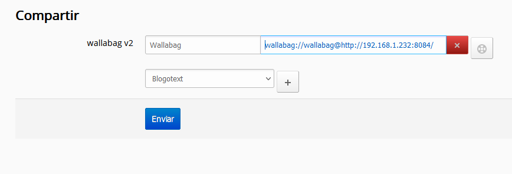
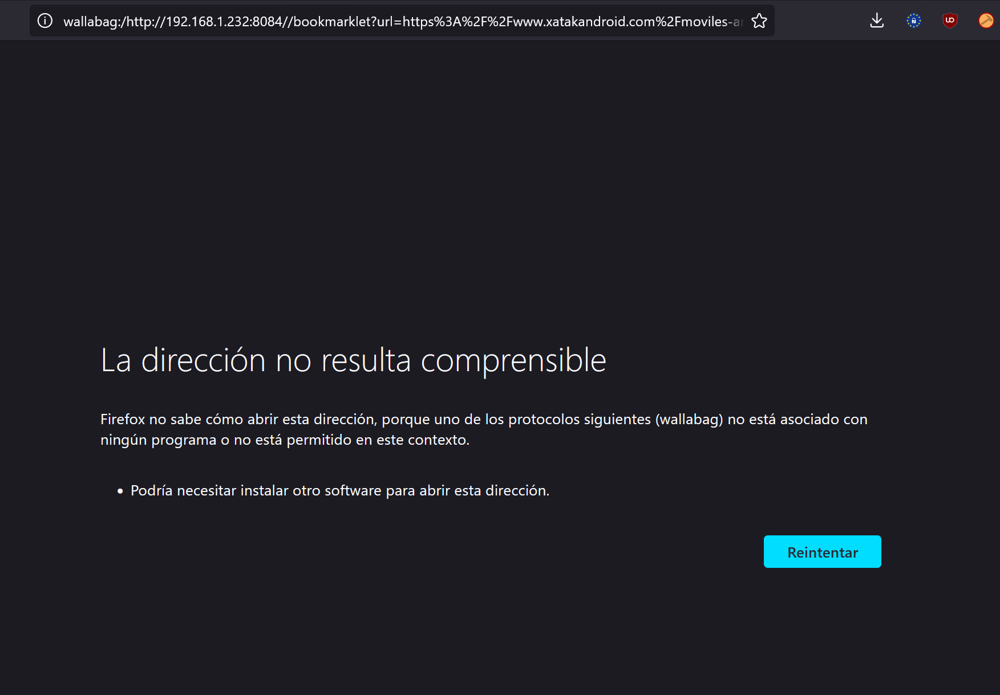
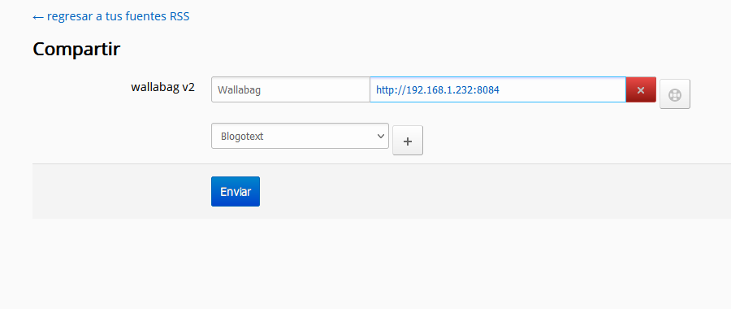

General¶
| Fecha | Wallabag | FreshRSS |
|---|---|---|
| 12-04-2022 | 2.4.31 | 1.19.22 |
Descripción¶
Integración FreshRSS & Wallabag (botón compartir):

Al pinchar el botón de "Compartir" y seleccionar la opción "Wallabag", si la integración es la correcta, la noticia mostrada en FreshRSS se archiva automáticamente en Wallabag sin más interacción
Problema¶
-
Configuración por defecto que no funciona:
wallabag://wallabag@http://192.168.1.232:8084/
-
Genera la URL:
JavaScript 1wallabag://wallabag@http://192.168.1.232:8084//bookmarklet?url=https%3A%2F%2Fwww.microsiervos.com%2Farchivo%2Fenergia%2Fexplorador-datos-energia-electricidad-2022.html

Añadir URL desde navegador¶
-
Añadir desde el navegador funciona con:
JavaScript 1http://192.168.1.232:8084/bookmarklet?url=
- Fuente: GItHub Wallabag | Issue 2130
js javascript:var url=location.href||url;var wllbg=window.location.replace('https://url.com/web/bookmarklet?url=' + encodeURI(url));void(0);
Solución¶
- Configuración que funciona:
http://192.168.1.232:8084 -
⚠ IMPORTANTE: debe ir sin la barra
/al final
-
Genera la URL correcta:
| JavaScript | |
|---|---|
1 | |
Last update:
30 de diciembre de 2022 16:11:56
Created: 30 de diciembre de 2022 16:11:56
Created: 30 de diciembre de 2022 16:11:56